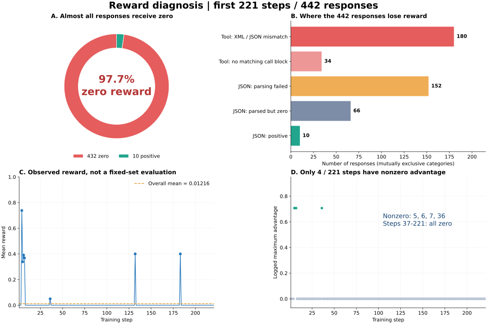

Qwen3.8 LoRA GRPO 低奖励分析 阅读导航 一眼看懂：证据总览 97.7% 回答零分
0.01216 平均 reward
98.2% 训练步组内同分
4 / 221 非零 advantage 步数
442 个回答 → 432 个零分 → 217 步组内同分 → 仅 4 步产生非零 advantage

图 A 为零分比例；图 B 为互斥分类；图 C 为不同训练样本上的逐步奖励；图 D 为 SwanLab 实测优势。范围固定为前 221 步。XML 分类只说明协议冲突，不保证这些回答全部语义正确。
互斥分类 回答数 占比 工具：XML 协议冲突 180 40.7% 工具：未匹配到调用块 34 7.7% JSON：解析失败 152 34.4% JSON：解析成功但零分 66 14.9% JSON：正分 10 2.3%
实际样例：输出与参考并排对照 第 5 步 · 回答 1 · 实际 reward = 0.0 解释文字和代码块使整个输出不是纯 JSON，在字段评分前就归零。
模型完整输出 Based on the tool result, this Friday is **2026-07-10**. The user wants a meeting with Sarah at noon (12:00). All required fields are available:
- **title**: "Meeting with Sarah"
- **start_date**: 2026-07-10
- **start_time**: 12:00 (noon)
- **type**: add
This is a future date, so no past-time intercept is triggered.
```json
{
"data": [
{
"type": "add",
"start_date": "2026-07-10",
"start_time": "12:00",
"end_date": "",
"end_time": "",
"title": "Meeting with Sarah",
"location": "",
"repeat_type": "",
"repeat_end_date": "",
"remind_type": "",
"reminder_time": ""
}
],
"succ_message": "Sure, I've scheduled your Meeting with Sarah at 12:00 on July 10, 2026. A good tip: confirm the agenda with Sarah beforehand so the meeting stays on track.",
"err_message": ""
}
```参考结构 {
"data": [
{
"end_date": "",
"end_time": "",
"location": "",
"remind_type": "",
"reminder_time": "",
"repeat_end_date": "",
"repeat_type": "",
"start_date": "2026-07-10",
"start_time": "12:00",
"title": "meeting with Sarah",
"type": "add"
}
],
"err_message": "",
"succ_message": "Sure, I've scheduled a meeting with Sarah on July 10, 2026 at 12:00. Don't forget to prepare any necessary materials beforehand!"
}第 37 步 · 回答 1 · 实际 reward = 0.0 仅一个空格差异，当前字段比较仍判为不相等。
模型完整输出 ```json
{
"keywords": "出租屋 必备用品"
}
```参考结构 {
"keywords": "出租屋必备用品"
}第 174 步 · 回答 2 · 实际 reward = 0.0 工具名及三个参数值与参考一致；模板要求 XML，但奖励函数按 JSON 解析。
模型完整输出 <tool_call>
<function=ai_assistant_video>
<parameter=prompt>
水果在盘子里自己切好摆盘，镜头垂直俯拍
</parameter>
<parameter=resolution>
1 : 1
</parameter>
<parameter=duration>
15s
</parameter>
</function>
</tool_call>参考结构 [
{
"arguments": {
"duration": "15s",
"prompt": "水果在盘子里自己切好摆盘，镜头垂直俯拍",
"resolution": "1 : 1"
},
"name": "ai_assistant_video"
}
]证据数据下载 分析日期：2026-09-12（UTC）
结论
奖励规则与模型原生工具调用格式、任务内容不匹配，使绝大多数回答得到零分。每个 prompt 只采样两个回答，组内奖励又几乎总是相同，导致 GRPO 几乎没有任务奖励驱动的学习信号。继续延长当前训练或单独调大学习率，无法解决这些已确认的问题。
本报告依据 SwanLab 实际指标、本地生成记录和当前奖励函数代码。分析过程中未修改训练代码、奖励规则，也未停止训练。
数据来源与复核范围
SwanLab 实验页面 ：读取时状态为 RUNNING。本地回答：logs/rollouts/Qwen3.8-27B-LoRA-FSDP2-MIG67G-ReferenceReward/{1..221}.jsonl。每步两个回答，包含 input、output、gts、score、step、uid。 奖励代码：/shared/users/yangyq/data/recipe_v2_fixed/tf_rl/reward.py。 输入与采样代码：同目录的 rendering.py、dataset.py、agent_loop.py。 GRPO 实现：verl/trainer/ppo/core_algos.py，compute_grpo_outcome_advantage。 代码基点：个人分支提交 d5d24f87，父提交 89dad2d7。外部 recipe 文件不包含在此提交中，报告反映分析时读取的文件内容。 已离线复算成功解析的 JSON 回答，其重算分数与记录分数在 1e-5 容差内一致。此项验证支持当前 JSON 评分逻辑能解释日志中的分数；没有对所有工具调用完成兼容解析后的重评分。
关键统计
指标 前 221 步结果 回答总数 442 平均 reward 0.01216044 零分回答 432 / 442（97.7%） 正分回答 10 / 442（2.3%） 工具调用任务 214 个回答，全部零分 JSON 任务 228 个回答，218 个零分 组内奖励相同 217 / 221 步（98.2%） advantage 和 pg_loss 非零 仅第 5、6、7、36 步 学习率 全程为 3e-6 观测到的最长响应 1154 tokens，未达到 4096 上限
步数窗口 平均 reward 正分回答数 1–50 0.03774916 6 / 100 51–100 0 0 / 100 101–150 0.00800000 2 / 100 151–200 0.00800000 2 / 100 201–221 0 0 / 42
配置为 data.shuffle=False，这些窗口对应不同训练样本，不能据此认定模型能力随时间下降。是否提升应通过固定验证集比较。
根因一：原生工具调用格式与奖励解析器冲突
实际输入模板要求在 <tool_call> 内使用 <function=...> 和 <parameter=...>。rendering.py 第 35 行调用模型自己的 apply_chat_template；实际 rollout 的 input 可以直接确认该要求。
模型输出示例：
<tool_call>
<function=ai_assistant_video>
<parameter=duration>
15s
</parameter>
</function>
</tool_call>但 reward.py 第 37–55 行只接受工具调用内部为 JSON；第 47 行直接执行 strict_json(m.group(1))。它期望的格式是：
{"name":"ai_assistant_video","arguments":{"duration":"15s"}}这段 JSON 必须包在 <tool_call> 标签内。解析器还禁止标签外出现解释文字，而实际模板允许在工具调用前出现自然语言解释，两者也存在冲突。
214 个工具任务回答中，180 个包含 XML 工具调用，34 个没有匹配到解析器要求的工具调用块；全部得到零分。180 个回答并不因此都被判定为语义正确，但其 XML 格式本身已足以导致当前解析失败。
明确样例：第 174 步第二个回答调用 ai_assistant_video，视频 prompt、duration=15s、resolution=1 : 1 均与参考答案一致，且没有额外解释文字，仍因 XML 与 JSON 格式冲突得到 0 分。
根因二：自由文案被当成确定性字段精确匹配
reward.py 第 110–115 行将预测和参考 JSON 拆成叶子字段，仅当字段路径和值完全相等时计分：
agreement = 2 × 匹配叶子数 / (预测叶子数 + 参考叶子数)
score = 0.8 × agreement + 0.2 × 完全一致标记字符串必须整段一致，数组还按元素位置比较。JSON 包装并不意味着内部内容有唯一标准答案。实际样本包含 related_questions、advices、inspiration、opening_remarks 等开放文案字段，合理改写也可能完全没有匹配叶子。
228 个 JSON 任务回答中，76 个成功解析；其中 66 个仍为零分，10 个为正分。成功解析且零分的样本包括购物建议、相关问题、创意提示等，不能仅凭零分推断其业务质量差。
明确样例：第 37 步输出 {"keywords":"出租屋 必备用品"}，参考为 {"keywords":"出租屋必备用品"}。仅一个空格差异，当前规则即给 0 分。
第 4 步的日程 JSON 则展示了部分分：结构化日期与时间一致，即使确认语不同仍能得分。这说明规则对确定性字段有作用，但对几乎全由自由文案构成的 JSON 不适合直接照搬。
根因三：JSON 外围文本导致整条回答归零
228 个 JSON 任务回答中，152 个未通过当前解析要求，其中 143 个报 JSON 起始解析错误，8 个输出了 XML 工具调用，1 个报额外数据错误。解析错误原因与具体输出内容需结合查看，不能将所有失败统一归为代码块问题。
第 5 步的一个实际回答先解释日程信息，再在 Markdown 代码块中给出 JSON。当前样本 allow_fence=False，解析器要求整个最终文本直接是 JSON，因而整条回答归零。
这类格式失败会在字段比较前截断奖励。仅提高答案字段准确性，仍可能完全得不到分。部分样本还有重复工具调用、输出结构不符等行为问题，需要与纯封装格式错误区分。
为什么奖励长期不涨：GRPO 组内信号消失
当前设置为 train_batch_size=1、rollout.n=2、norm_adv_by_std_in_grpo=True。GRPO 对同一 prompt 的两个回答做相对奖励归一化：
advantage = (reward - 组内平均 reward) / (组内标准差 + ε)两个回答同为零分，或者同为相同的正分，advantage 都为零。217 个训练步满足这一条件。SwanLab 中 advantage 的最大值、最小值及 pg_loss 只有第 5、6、7、36 步非零，第 37–221 步全部为零，与本地奖励统计相符。
梯度范数和 KL loss 在这些步仍非零，不意味着存在有效的任务奖励学习信号。配置启用了 KL 正则；即使奖励对应的策略梯度为零，KL 项仍可产生梯度，也不能据此声称所有参数更新完全停止。
已检查的其他因素与限制
未发现达到 4096 token 响应长度上限：前 221 步最长响应为 1154 tokens。该上限不是当前零分的主要解释，但这不排除其他输出完整性问题。 response_length/clip_ratio 显示 0.5–1，不能直接解释为一半或全部回答达到配置上限。verl/trainer/ppo/metric_utils.py 使用 responses.shape[-1] 作为比较长度；结合实际长度，批次张量宽度可能影响其含义。学习率一直为 3e-6。没有证据将本轮主要问题归因于学习率，而零优势与解析冲突已有直接证据。 参考答案标注为 unverified_teacher_after_targeted_checks；当前分数衡量参考一致性，不等价于独立验证的业务成功率。 结论对应前 221 步快照。训练继续运行后，应另行采集新的指标；本报告不把 RUNNING 状态当作持续正常运行的保证。 建议的修复与验证顺序
统一工具协议。 支持当前模型原生 XML 调用，将工具名及参数转换为统一结构，再进行 schema 与字段验证。保留参数类型、必填项及多调用语义，明确调用前解释文字是否允许；不要只替换标签或吞掉所有异常。按任务定义奖励。 对日期、工具名、数值、枚举等确定性字段做规则验证。对自由文案使用合适的语义评价，或先从规则奖励训练中移除；不要要求所有建议、提示语逐字复刻教师答案。明确输出格式契约。 让提示、示例、解析器对代码块和附加解释的要求一致。若业务必须纯 JSON，应通过明确提示、格式示例或先行 SFT 提高格式成功率；不要靠任意抽取 JSON 掩盖错误行为。先离线重评分。 使用已有 442 个回答，对照修复前后解析成功率、各任务正分率、奖励分布和组内不同分比例。加入正确 XML、错误工具名、参数类型错误、合理文案改写等有区分度的用例。再做短训练与固定验证。 奖励正确后，结合显存预算尝试增加 rollout.n 和训练 batch；观察有效组比例、advantage、pg_loss 及固定验证集的任务成功率。不要把增加采样数当作协议修复的替代。建议补充记录 format_valid、field_accuracy、解析失败原因、任务类型、组内奖励标准差和零优势组比例。本次可读的本地 JSONL 仅有汇总 score 等字段，没有这些奖励诊断分项，需离线解析才能定位。
本次交付范围
本次完成指标读取、前 221 步回答统计、JSON 分数复算和代码核对。尚未实施解析器修复、奖励重设计、重新训练或固定验证集评测。修复后的分数提升需要与真实任务质量提升分开验证。
分析快照：2026-09-12 · 前 221 步 · 同目录提供 Markdown 版本